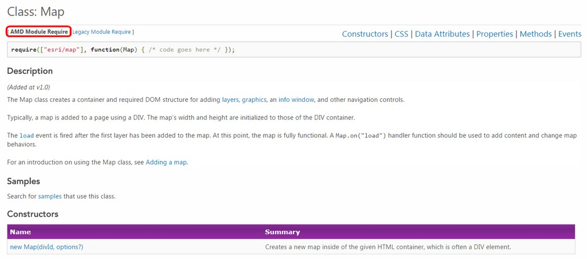

ArcGIS Server
地圖網頁製作
ArcGIS開發者資源 | 開發工具 | dojo / dijit | ArcGIS API for Javascript
作者
ArcGIS開發者資源
ArcGIS開發者資源 | 開發工具 | dojo / dijit | ArcGIS API for Javascript
ArcGIS Developer
下載SDK及API說明文件
各式開發文件連結
ArcGIS API for Javascript 線上文件

教學文件
範例程式
API參考文件
Esri GitHub
開發工具
ArcGIS開發者資源 | 開發工具 | dojo / dijit | ArcGIS API for Javascript
文字編輯器與IDE
線上編輯環境
dojo / dijit
ArcGIS開發者資源 | 開發工具 | dojo / dijit | ArcGIS API for Javascript
模組與套件
載入模組
版面設定
JS BinArcGIS API for Javascript
ArcGIS開發者資源 | 開發工具 | dojo / dijit | ArcGIS API for Javascript